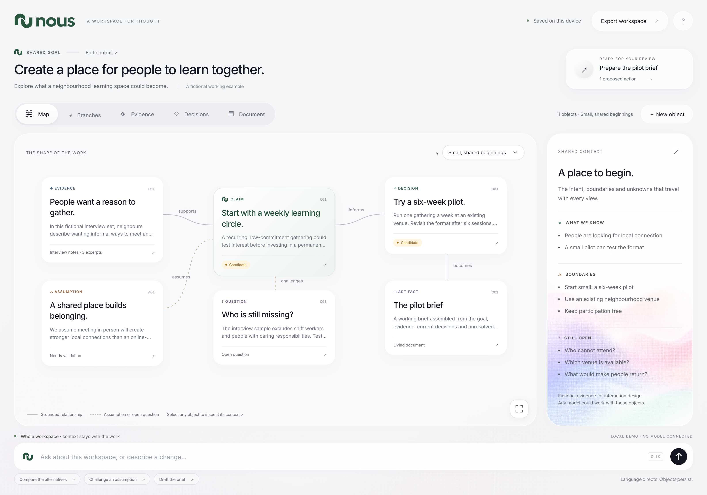
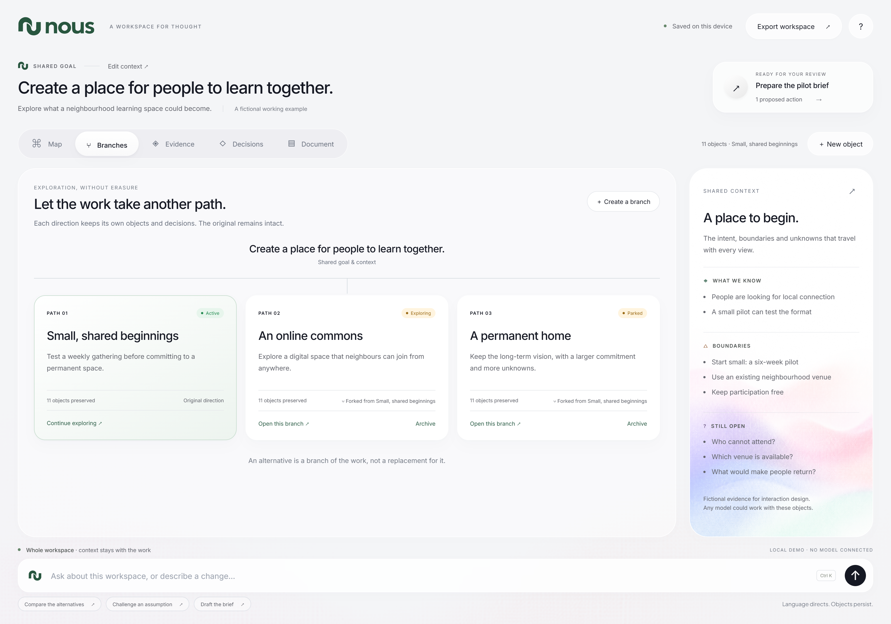
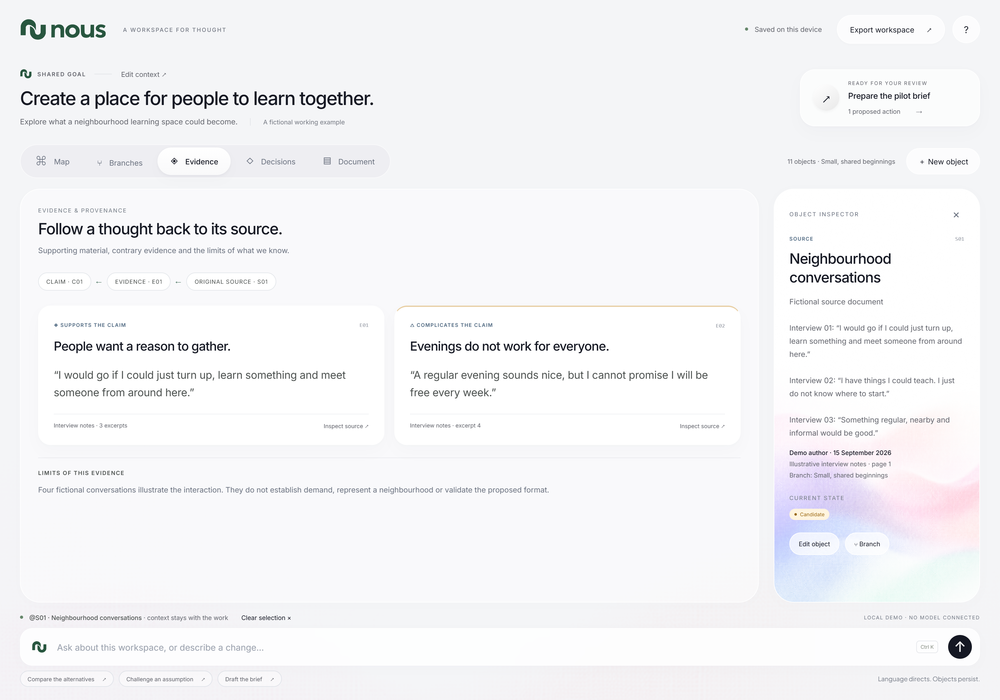
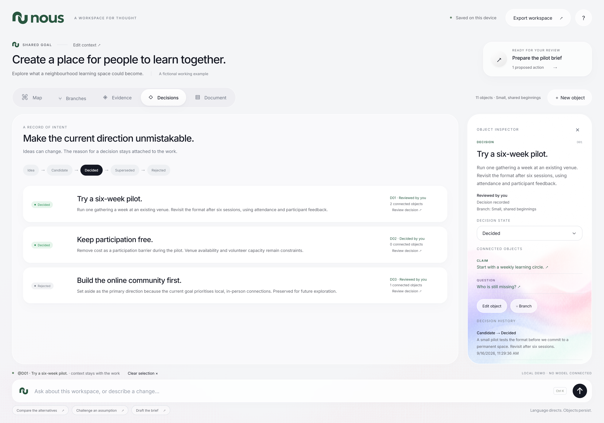
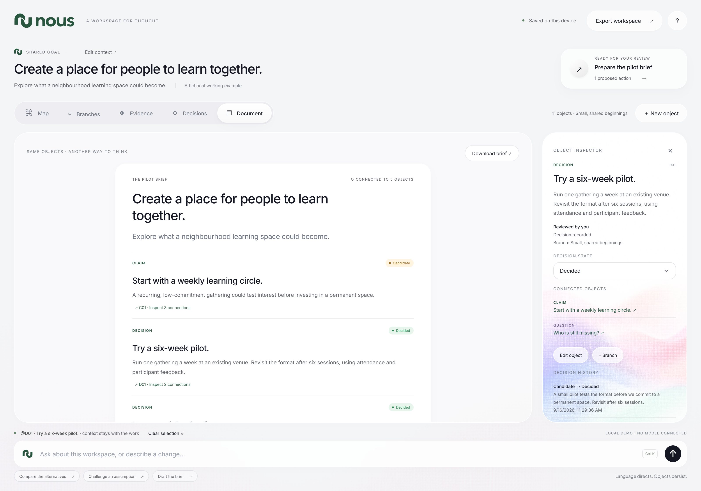
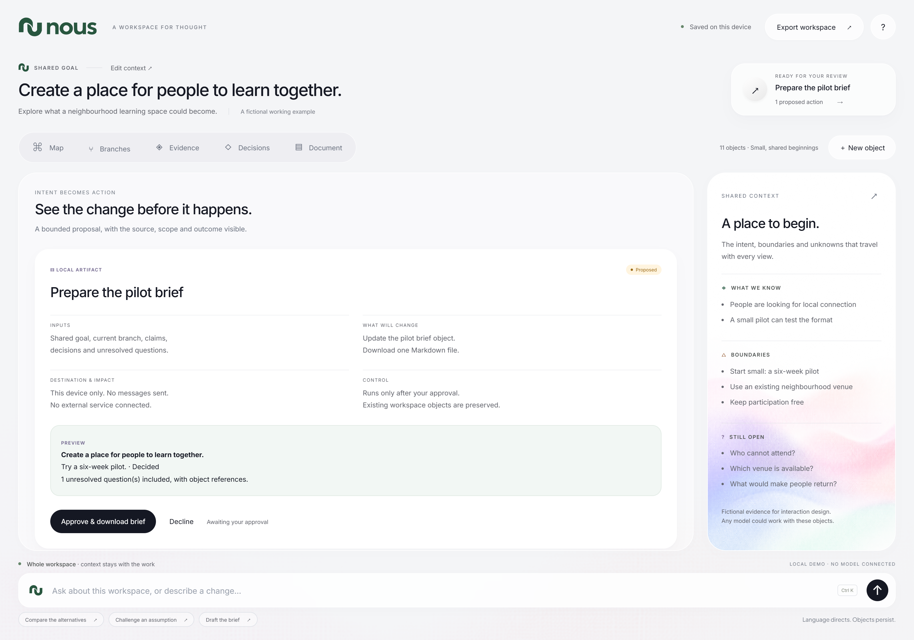
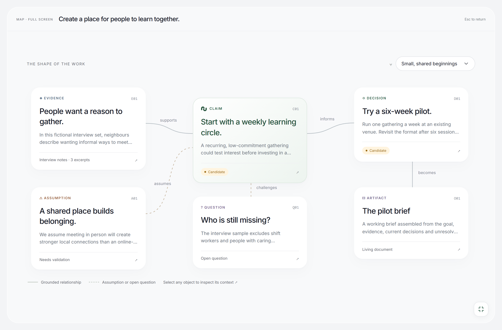

(1) The work, made visible.
The workspace makes the goal, context and relationships visible. Natural language directs the work; persistent objects hold it.
Download full-resolution PNG
(2) Exploration, without erasure.
Alternatives remain available as independent branches, each preserving its own objects and decisions.
Download full-resolution PNG
(3) Evidence you can inspect.
A claim can be followed through supporting or contradictory evidence to the original material. The limits of the evidence stay visible.
Download full-resolution PNG
(4) A decision has a state.
A decision is more than a recommendation. Its current state, connected objects and reason for change are part of the record.
Download full-resolution PNG
(5) Another view. The same work.
Change the representation, keep the work. The document uses the same claims and decisions as the map, with their identities and states intact.
Download full-resolution PNG
(6) Control before action.
Before an action runs, the user can inspect its inputs, scope, destination and impact. This prototype demonstrates approval with a real local brief download.
Download full-resolution PNG
(7) Space to see the whole map.
Expand the map to fill the screen. The objects scale together to fit the available space without scrollbars.
Download full-resolution PNG